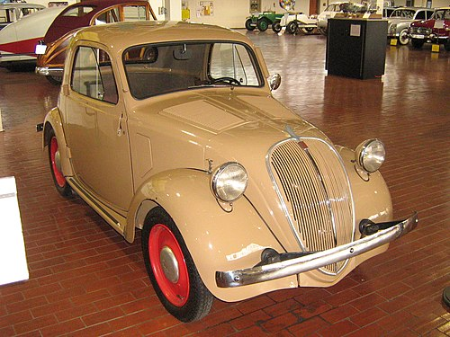
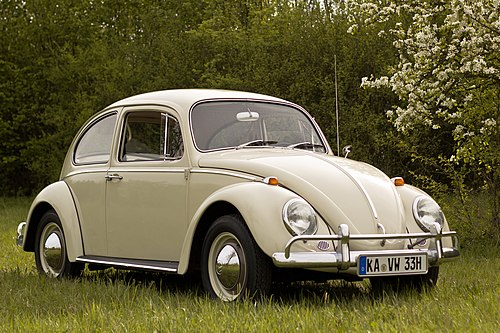
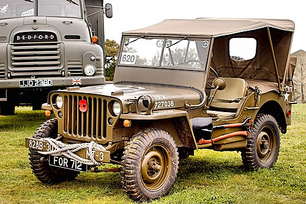
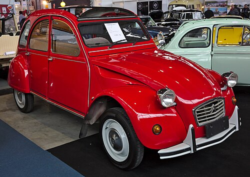
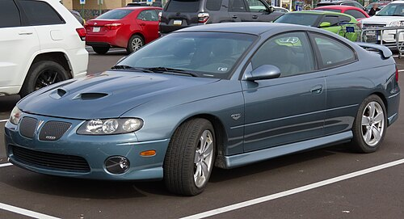

nome: Fiat Topolino
produtora: Fiat
ano: 1947

nome: Ford Ka
produtora: Ford
ano: 1997

nome: fusca
produtora: Volkswagen
ano: 1938

nome: Jeep Willys
produtora: Willys Overland
ano: 1941

nome: Citroen 2CV
produtora: Citroën
ano: 1948

nome: Tucker Torpedo
produtora: Preston Tucker
ano: 1948

nome: Pontiac GTO
produtora: Pontiac
ano: 1963

nome: Porsche 968
produtora: Porsche
ano: 1992